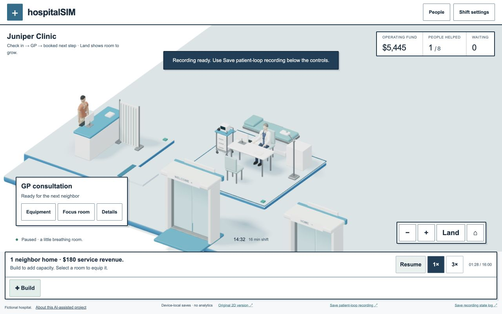
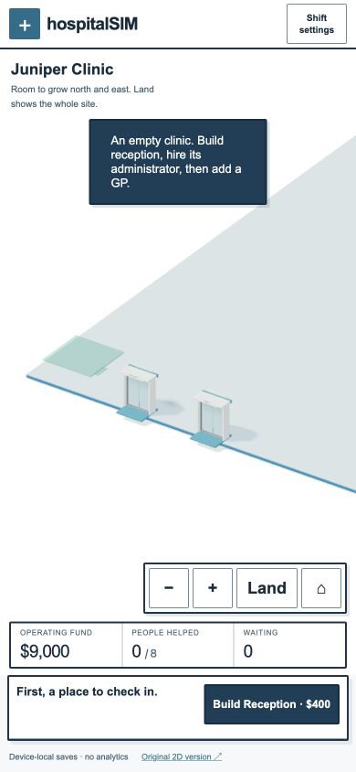
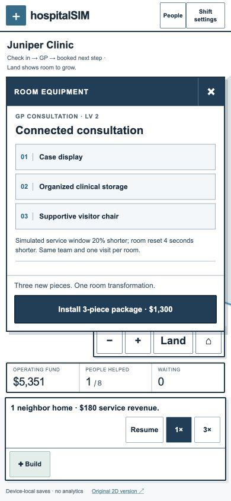
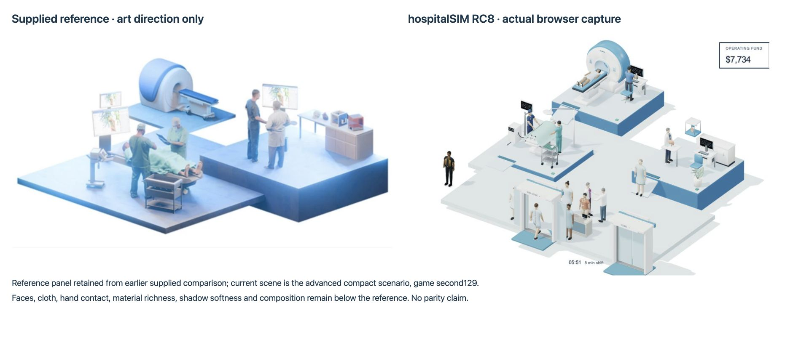

RC8 / runtime 138 · November5,2026. A playable AI-assisted engineering prototype, with no production-readiness or commercial-game superiority claim.
Upgrades now install three relevant physical pieces. A GP Exam suite adds an adjustable examination plinth, assessment trolley and articulated task light for $900. The next package adds a display, clinical storage and visitor chair for $1,300. Every service family has its own package. Existing paid room levels are preserved; later purchases use the new equipment rules.
Each new component rises, unfolds and settles in a staggered animation. Reduced motion shows the final installation immediately. Packages keep the same team and one visit at a time; they adjust only the named room's fictional service/reset parameters. Video EEG, sleep recording and procedure active durations are not shortened by their packages.

8.008 seconds of actual browser canvas recording, game seconds 80–88. Controlled QA checkpoint: one scheduled visitor, normally earned funds, no extra money. The $900 installation occurs at second 80. Menus are summarized in canvas captions; they are not filmed. Public movies have an index for seeking. The first loop is transcoded to H.264; the transformation is losslessly remuxed. Source retains native files. No synthetic scene frames.
Full recording checkpoint and event log. Native runtime 137 / same RC8 model, first 90simulation seconds. Actual UI actions place rotated reception/GP modules on quarter cells, hire both colleagues and open the doors. Two arrivals, one completed first visit, $180 earned. First visitor arrives in everyday clothes, checks in, changes, sees the GP, changes back and exits. Exact model replay checks all recorded actions and counts.
The new clinic uses a32 × 28 site, a0.25 cell placement step and 16-minute shifts at 1×. Choose a location, rotate the pinned ghost, then explicitly place it. Invalid doors remain invalid; confirmation never silently moves your room. Numeric X/Y placement and keyboard arrows/R/Enter/Escape remain available. Opening doors is your decision; the first minute schedules only one visitor. Later booked needs reveal further services.



The supplied reference panel is retained from the earlier comparison, unchanged. The new right panel is a runtime 138 advanced-scenario browser capture at second129, with imaging and procedure both active. This compact scenario is available under Shift settings; it is not the new empty clinic opening. The original reference is not a playable asset.
Still below the reference: simplified faces/hands and clothing, approximate clinician hand contact, static drape deformation, flatter materials/light, rigid crowd queues, and a more spacious circulation composition. New equipment has original modeled detail but does not add bespoke hand-contact animations. The vast estate remains visually plain. This is not equivalent to the supplied reference.
Blender 4.0.2 executed the Python generator and saved editable equipment_upgrades.blend plus an embedded GLB containing54 original independent components across 9 equipment families and 2 tiers. CC0-1.0, substantial AI assistance; no downloaded models, brand artwork or real patient information. Source includes catalogue, script, blend, execution log, manifest and license.
All 30game test suites,255 portfolio tests, TypeScript and the production build passed locally. Checks include exact native recording replay, complete-package payment, occupied/reserved-room rejection, legacy upgrades, undo, save equivalence,16-minute termination/continuation, routing and arrival accounting. Browser checks exercised390×844and desktop layouts, quarter placement/rotation/cancel/undo, equipment purchase, reload, reduced motion and a clean application error console.
Measured initial GLB compression:6,235,383gzip bytes (65 initial GLBs). The new equipment GLB is lazy-loaded:4,115,592raw / 759,379gzip bytes. A two-room scene with3 new parts observed 42,038 rendered triangles and 65 draw calls after settling;6 parts observed 45,598/76. These are scene snapshots on Apple M2/in-app Chromium, not a midrange-phone benchmark. Initial shadow refresh/animation adds passes. A 40-room full-estate view still exceeds the provisional graphics budget.
Physical iPhone/Safari retest, assistive-technology audit, external usability testing, clinician review and educational evaluation are pending. The longer shift permits more growth but does not establish that the economy is balanced or that play is fun. Ten deterministic expanding runs retained25–30completed visits; some still exhausted funds or left long queues.
Model/pipeline/run notes · Unperformed evaluation protocol · Editable source and evidence